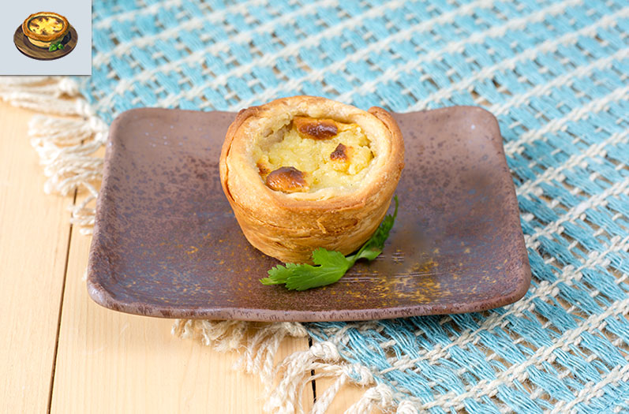

Egg Tart

Description
This is a real life take of the Egg Tart dish from Legend of Zelda: Breath
of the Wild.
Photo and recipe credit goes to
Pixelated Provisions.
Ingredients
Dough
- 2 cups all-purpose flour extra for dusting
- 1/2 tsp salt
- 1 tsp sugar
- 1/2 tsp cinnamon
- 1/2 cup butter cold and cubed
- 1/2 cup butter frozen and grated
- 1/2 cup ice water
- 1/2 tsp vinegar
Filling
- 5 egg yolks
- 3 tbsp cornstarch
- 3/4 cup milk
- 1 cup heavy cream
- 3/4 cup sugar
- 1 tsp salt
- 1/2 vanilla bean split lengthwise
- 1 cinnamon stick
- 1 tsp lemon zest
- 2 tbsp butter
- 2 tsp vanilla extract
Extras
- Ground cinnamon
- Powdered sugar
Steps
Dough
- Combine the flour, salt, sugar, and cinnamon in a bowl.
-
Add the ½ cup cubed butter and combine using your hands. Combine until
it resembles coarse meal, but make sure to leave some big chunks of
butter in there.
- Add the vinegar and mix in.
-
Slowly add the water to the mixture. You might not need all of it. If
the dough is too dry, feel free to add one tablespoon of extra water at
a time. Combine the mixture and do not over work it.
-
Generously flour the counter and the rolling pin. Place the dough on the
counter and knead until the ball is smooth.
- Roll the dough out into a long rectangle.
-
Add half of the frozen, grated butter to the bottom two thirds of the
dough.
-
Fold the top third of the dough towards you. Next, fold the bottom third
to the middle.
- Turn the folded dough 90° and roll out into a rectangle.
-
Add the remaining frozen, grated butter to the bottom two thirds of the
dough.
-
Fold the top third of the dough towards you. Next, fold the bottom third
to the middle.
-
Wrap the folded dough in plastic wrap and let rest in the refrigerator
for one hour.
-
Preheat the oven to 425°F. Take the puff pastry dough out of the
refrigerator and place on the floured countertop. Roll the pastry out
into an 18-inch square.
-
Brush off any excess flour from the dough. Carefully and tightly roll
the dough up.
-
Cut the dough into 12 equal portions. Place each of the dough piece into
a muffin tray, cut side up.
-
Press down on and flatten the dough into the muffin tray. Place the
muffin tray in the refrigerator while you make the filling.
Filling
-
Combine the egg yolks, cornstarch, and one fourth cup of milk in a bowl
and set aside.
-
Whisk together the remaining milk, heavy cream, sugar, salt, vanilla
bean, cinnamon stick, and lemon zest in a saucepan over medium-high
heat. Bring to a simmer and reduce the heat. Simmer for 10 minutes.
-
Remove the cinnamon stick and vanilla bean. Make sure to scrape any of
the vanilla seeds out of the bean and into the saucepan.
-
Scoop out a ½ cup of the heated mixture and place it in the bowl with
the egg yolks. Whisk the contents in the bowl.
-
Add another ½ cup of hot milk to it while still whisking. Slowly add the
mixture into the saucepan.
-
Whisk until the filling just begins to thicken. Remove from the heat and
add the butter and vanilla extract. Mix well.
-
Take the muffin tin out and fill each tin with a portion of the filling.
Place in the oven and bake for 30 minutes. Turn off the heat and leave
the egg tarts in for an extra 5 minutes.
- Serve with powdered sugar and ground cinnamon to top.